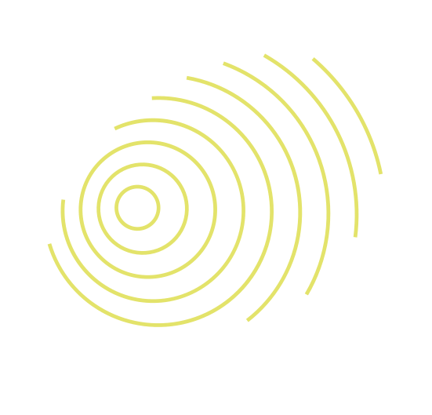
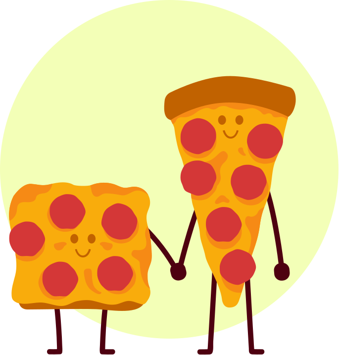
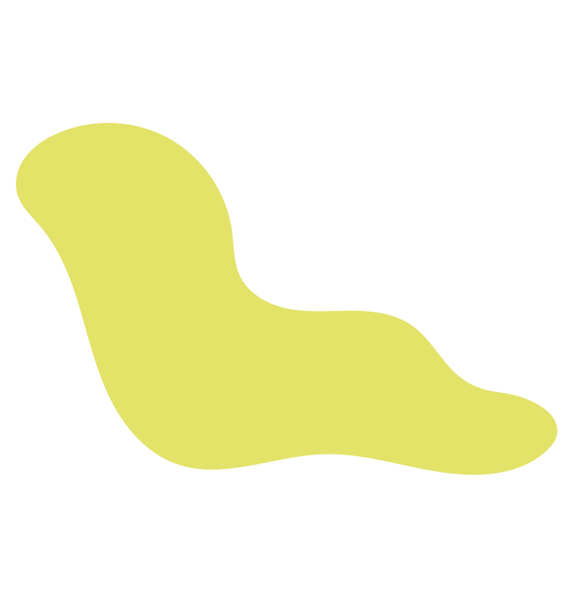
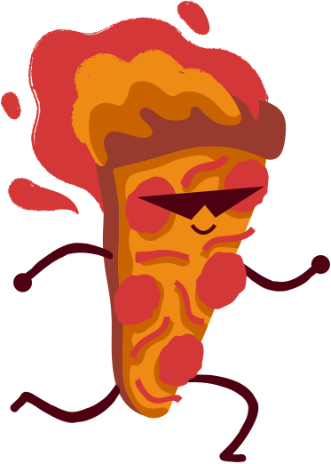
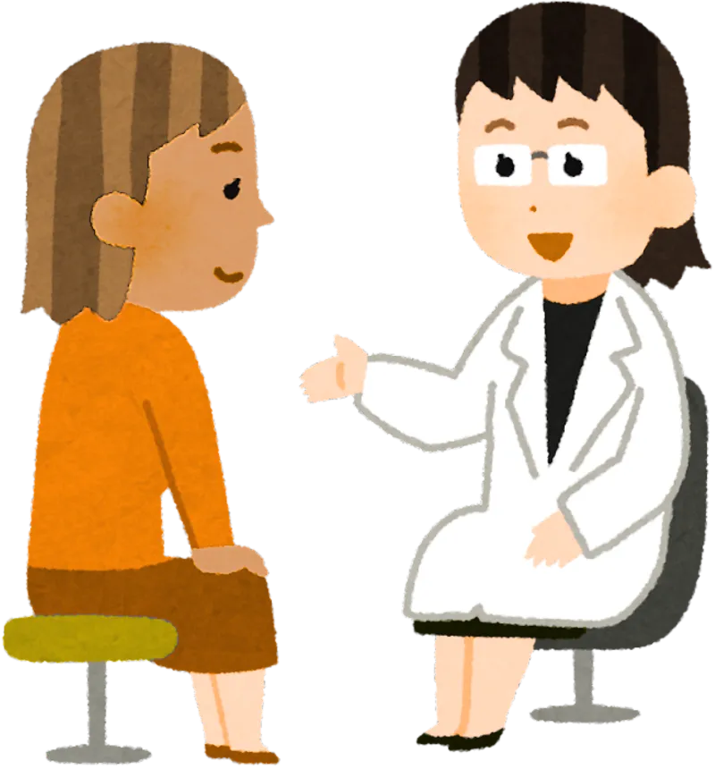
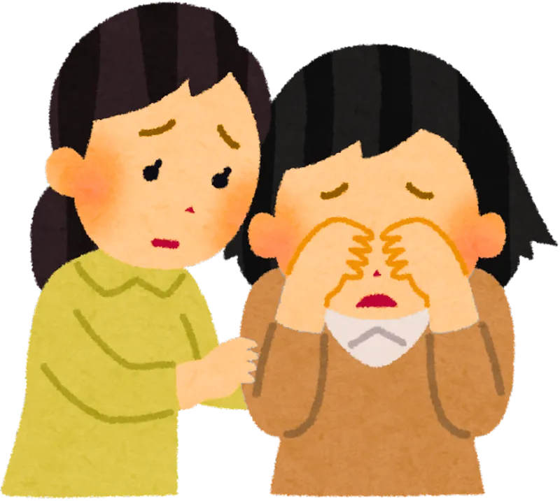
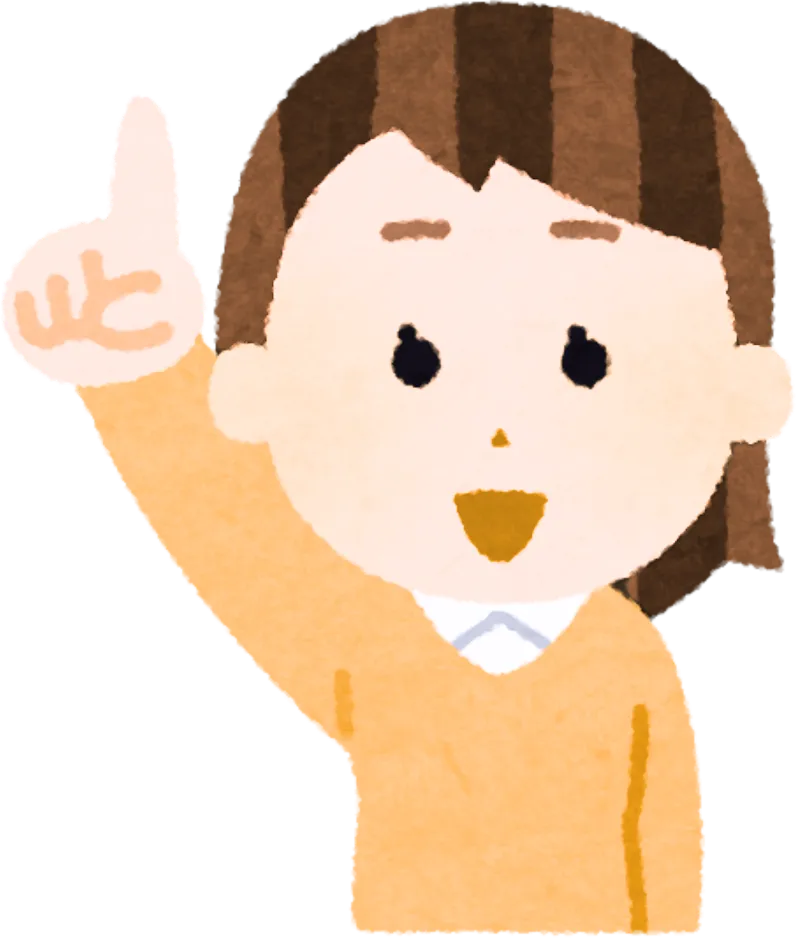

Bâtir un réseau de soutien
Crédits : Adam Yu, BMLSc, MSc; Kevin Li BSc MSPH
Dr. Marlene Dytoc MD PhD FRCPC
Conçu par : Danting Zheng BSc Premier cycle
Traduction : Cécilia Bernier BSc, Michelle Leung BScN


Ce qu’on va explorer au sujet du soutien
À la fin de ce module, vous serez en mesure de :
Aperçu du module
- 01Impact de l’eczéma au-delà de la peau
- 02Quand et comment obtenir du soutien en santé mentale
- a) Signes qu’il est temps d’aller chercher plus de soutien
- b) Parler de vos émotions avec votre médecin
- 03Briser le cycle
- a) Qui fait partie de votre équipe?
- b) Obtenir du soutien à la maison et à l’école
- c) Faire face à la stigmatisation et renforcer la confiance en soi
- d) Aider votre enfant à faire face à la situation
- 04Où trouver des ressources fiables
Bâtir votre équipe
L’eczéma, c’est plus qu’une question de peau
Vivre avec l’eczéma présente des défis uniques. Vous ou votre enfant pourriez :
- Vous sentir frustré, dépassé ou gêné.
- Éviter certaines activités sociales, être hésitant dans vos relations intimes ou avoir de la difficulté à expliquer votre condition aux autres.
- Avoir des problèmes de concentration, de productivité ou de participation à vos passe-temps.
- Vivre une faible estime de soi ou une image corporelle négative.
Rappelez-vous, vous n’êtes pas seul dans cette situation. Ce module est là pour vous aider à trouver le soutien que vous méritez.

Santé mentale et eczéma : quand aller chercher plus de soutien
C’est normal de se sentir
- Gêné par votre peau
- Stressé par la gestion du traitement
- Triste ou anxieux lors des poussées
Quand demander de l’aide
- Vous sentir découragé la plupart des jours
- Éviter vos amis ou l’école
- Avoir de la difficulté à dormir ou à manger
- Vous sentir sans espoir
- Avoir de la difficulté à suivre le traitement ou vous sentir dépassé comme proche aidant
Si vous avez besoin de parler à quelqu’un maintenant — Ligne d’aide en santé mentale de l’AHS
Soutien gratuit et confidentiel, 24 h sur 24, 7 jours sur 7, avec interprètes en français. Votre médecin de famille ou votre dermatologue peut aussi être un excellent premier point de contact pour obtenir une référence.
Prendre le temps d’y réfléchir
Question 1 de 5
Discuter de vos émotions avec votre médecin
Vos médecins ont besoin d’avoir le portrait complet pour mieux vous aider, vous ou votre enfant. Ce que vous ou votre enfant pouvez dire :
- «Cette poussée me décourage vraiment.»
- «Je suis stressé et je ne dors pas bien.»
- «Est-ce que je peux parler à quelqu’un de ce que je ressens?»
Cela aide votre médecin à soutenir l’ensemble de votre santé.
Qui peut faire partie de votre équipe de soutien?
Une bonne équipe de soutien peut inclure :
- Votre dermatologue ou votre médecin de famille
- Un conseiller en santé mentale ou un thérapeute
- Vos parents ou tuteurs
- Vos frères, sœurs et amis
- Vos enseignants ou le personnel scolaire
- Les communautés en ligne sur l’eczéma et des pairs dans des programmes de groupe
Bâtir du soutien à la maison et à l’école
À la maison
- Faites savoir à votre famille comment elle peut vous aider
- Demandez du soutien pour gérer votre condition, par exemple pour vous rappeler vos traitements ou pour éviter les déclencheurs
À l’école ou au travail
- Parler de votre condition à un·e enseignant·e ou à votre patron·ne
- Demander de l’aide pour gérer les déclencheurs (p. ex. savons agressifs dans les toilettes)
- Signaler toute intimidation ou moquerie

Faire face à la stigmatisation et renforcer la confiance en soi
Parfois, les gens ne comprennent pas l’eczéma. Vous ou votre enfant pourriez être taquiné, vous sentir gêné ou «différent», ou essayer de cacher votre peau. Ce qui peut aider :
- Pratiquer l’autocompassion : «Je suis plus que ma peau.»
- Informer les autres (si vous le souhaitez) — partager de l’information factuelle peut dissiper les idées fausses.
- Parler à un adulte si vous êtes victime d’intimidation.
- Joindre des groupes où vous vous sentez compris.
Participer à des programmes qui encouragent le partage d’expériences peut réduire l’isolement et renforcer la confiance.

Prendre le temps d’y réfléchir
Question 2 de 5Prendre le temps d’y réfléchir
Question 3 de 5Aider votre enfant à faire face à la situation
Pour les parents et proches aidants :
- Encourager les enfants à parler de leurs émotions
- Utiliser des outils pour se calmer (respirations profondes, dessin, pauses)
- Valoriser leur courage et leurs efforts
- Les aider à pratiquer des réponses aux questions curieuses
Prendre le temps d’y réfléchir
Question 4 de 5Où trouver du soutien
Aide en personne :
- Demandez à votre médecin une référence vers un conseiller ou un groupe de soutien
- Plusieurs hôpitaux offrent des services de soutien aux patients
Ressources en ligne en français :
- Société canadienne de l’eczéma — eczemahelp.ca (s’ouvre dans un nouvel onglet)
- Centre d’excellence pour la dermatite atopique — muhccoead.com/fr (s’ouvre dans un nouvel onglet)
- Appli EczemaQ — eczemaquebec.com/eczemaq/
Ressources en ligne en anglais :
- National Eczema Association — nationaleczema.org (s’ouvre dans un nouvel onglet)
- MyEczemaTeam — soutien par les pairs en ligne
- KidsHealth.org — outils pour les jeunes et les parents
Ligne d’aide en santé mentale de l’AHS
Gratuit et confidentiel, 24 h sur 24, 7 jours sur 7.
Prendre le temps d’y réfléchir
Question 5 de 5Résumé : ensemble, on est capable!
- ›L’eczéma, ce n’est pas seulement une question de peau. Il peut aussi affecter votre humeur, votre sommeil, votre confiance et votre vie quotidienne.
- ›Vous n’avez pas à le gérer seul. Le soutien de la famille, des amis, des médecins et de la communauté fait une réelle différence.
- ›Parler de vos émotions, c’est important. Votre médecin peut vous aider à accéder à des ressources en santé mentale.
- ›L’éducation aide tout le monde. Quand les familles comprennent mieux l’eczéma, elles se sentent plus en confiance et moins stressées.
- ›Les programmes de groupe et les outils en ligne, ça fonctionne. Partager vos expériences et apprendre des autres peut améliorer les traitements et réduire l’isolement.
- ›Commencez tôt et continuez à bâtir votre équipe. Un solide réseau de soutien améliore la qualité de vie — pour vous et pour vos proches.
Besoin de parler à quelqu’un? Ligne d’aide en santé mentale de l’AHS
Soutien gratuit et confidentiel, 24 h sur 24, 7 jours sur 7.
Ce module offre de l’information générale et ne remplace pas les conseils de votre médecin ou de votre dermatologue. En cas de crise ou si vous pensez à vous faire du mal, composez le 911 ou appelez la ligne d’aide en santé mentale de l’AHS au 1-877-303-2642.
Sources
- Fung YL, Leung HT, Chan CLW. Efficacy of Integrative Body-Mind-Spirit group intervention for parents of children with eczema. Qual Health Res. 2020;30(6).
- Dufresne H, Bekel L, Compain S, et al. Efficiency of a therapeutic patient education programme in children with severe atopic dermatitis. J Eur Acad Dermatol Venereol. 2020;34(9):2003–2010.
- Greenwell K, McPherson T. Mental health in people with eczema: a critical priority. Br J Gen Pract. 2024;74(739):112–118.
- Fung IC, Kremer H, MacDermott A. Talking to doctors about feelings: improving emotional communication in chronic skin disease care. Qual Health Res. 2020;30(8):1201–1213.
- Andrade C, Helland T, Mørk G. Educational programs improve family quality of life and reduce treatment-related fears in pediatric atopic dermatitis. J Clin Med. 2023;12(6):2130.
- Hughes N, Tuller D, Griffiths CE. Understanding peer bullying and social challenges in childhood eczema. Behav Cogn Psychother. 2024;52(2):150–163.
- Greenwell K, Chalmers J, Marshman Z. Psychosocial interventions for parents of children with eczema: a mindfulness-based approach. Br J Gen Pract. 2024;74(739):112–118.